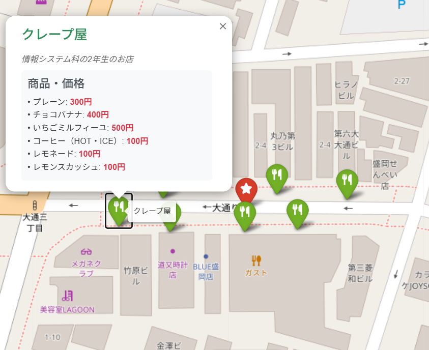

南部興行 盛岡ピカデリー・名劇1・2・盛岡ルミエール1・2
-
接客・販売・上映管理業務
チケット・売店・映写担当として接客・販売・上映管理業務を担当。
-
営業活動
自社映画案内フリーペーパーの配布、新規開拓を行う。
学生時代のアルバイトを含め、23年間映画館での接客業に従事してきました。2006年からは支配人代行、2011年からは副支配人を務め、アルバイトの採用から売上管理、お客様への接客まで、店舗運営全般に携わってきました。
2024年4月より盛岡情報ビジネス＆デザイン専門学校でITの専門知識を学んでいます。チーム開発プロジェクトを通じて技術面だけでなく、チームで協力して目標を達成することの重要性も再認識しました。
取得中
取得中
取得済み
合格
合格
取得済み
合格
合格
合格
合格
取得済み
取得済み

学園祭時に作成した店舗紹介アプリケーション。緯度経度からマップ上にマーカーを配置して店舗位置を表示し、マーカークリックで店舗詳細・商品・値段を確認できます。コメント機能も実装し、来場者が見やすいUI設計を重視。QRコード配布により、スマホで見ながら店舗を巡れる仕組みを実現しました。
メンバーの希望を考慮しながら、チームに自動で振り分けるアプリケーション。Excelファイルからメンバー情報を読み込み、希望チームを優先的に配置。希望なしのメンバーはランダムに振り分け、結果をExcelファイルに出力します。
モリジョビ生向けのランチスポット検索Androidアプリ。スクラムマスターとしてチームメンバーと共に試行錯誤を重ね、意見を出し合いながら開発を進めました。 地図上で学校周辺の飲食店を確認し、口コミやお気に入り機能で店舗を探せます。Google認証による学生限定アクセス、HotPepper API連携で実際の飲食店データを使用。 3ヶ月間チーム一丸となって完成させました。
JavaFXとSQLiteを使用した為替レート両替計算デスクトップアプリケーション。 Frankfurter APIを使用したリアルタイム為替レート取得、ログイン認証機能（SHA-256ハッシュ化）、 お気に入り通貨ペアの保存機能を実装。SQLインジェクション対策としてPreparedStatementを使用し、 セキュリティにも配慮した設計です。
チケット・売店・映写担当として接客・販売・上映管理業務を担当。
自社映画案内フリーペーパーの配布、新規開拓を行う。
社員3名 パート・アルバイト20名をマネジメント
配給会社との交渉により競合館との作品争奪戦を制し、話題作の上映権を獲得。この作品選定の成功を軸に、売店強化とリピーター制度を推進。結果、前年比120%の売上を達成。
お客様に寄り添う接客をスタッフに教育し、来場しやすい環境づくりを推進。競合店との差別化を図る作品選定により、固定客の増加に成功。
チケットシステム・上映サーバーネットワークの管理、保守を実施。障害発生時の迅速な復旧対応。
自社映画案内フリーペーパーの設置店舗を拡大（前年対比200%）。
新規に上映案内チラシを作成し配布を開始。
社員1名 パート・アルバイト25名をマネジメント
パート・アルバイトの作業ローテーションを個々の能力とシフトに基づき最適化。業務効率を維持しながら大幅なコスト削減を実現。
映画上映だけでなく、ヘアショー、落語、セミナーなど多様なイベントでの施設利用を推進し、新たな収益源を確保。
チケットシステム・上映サーバーネットワークの管理・保守を担当。トラブル発生時の迅速な対応により、上映中断を最小限に抑制。
お客様の利便性向上のため、フリーWi-Fiを設置・運用。ネットワーク構築から運用管理まで担当。
請求書の作成・送付、会計ソフトへのデータ入力など、バックオフィス業務も担当。
チケット・売店・映写担当として、日々の運営業務を遂行。
学園祭実行委員として、チームの調整役・推進役を担い、円滑なイベント運営を実現。
技術面だけでなく、「どのように立ち回れば仲間に貢献できるか」という視点の重要性を再認識。
ジョブフェスでの設営・撤去作業に参加し、イベント運営をサポート。
状況：週末の混雑時にチケット発券システムがダウン。お客様が列を作っている状況。
対応：即座にバックアップ端末に切り替え、システムベンダーに連絡。並行して手動発券の準備を開始。
結果：10分以内に復旧し、お客様への影響を最小限に抑えた。
状況：上映開始直前に上映機器とサーバーの通信が途絶。上映が開始できない状態。
対応：ネットワーク機器の再起動、ケーブル接続確認を実施。問題箇所を特定し、予備機器に交換。
結果：5分遅れで上映開始。お客様に謝罪と説明を行い、クレームを回避。
状況：大型作品公開初日で想定以上の来場者。既存レジでは対応しきれない状況。
対応：予備端末を急遽セットアップし、スタッフを追加配置。
結果：待ち時間を大幅に短縮し、お客様満足度を維持。